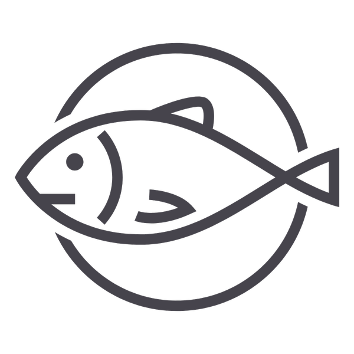
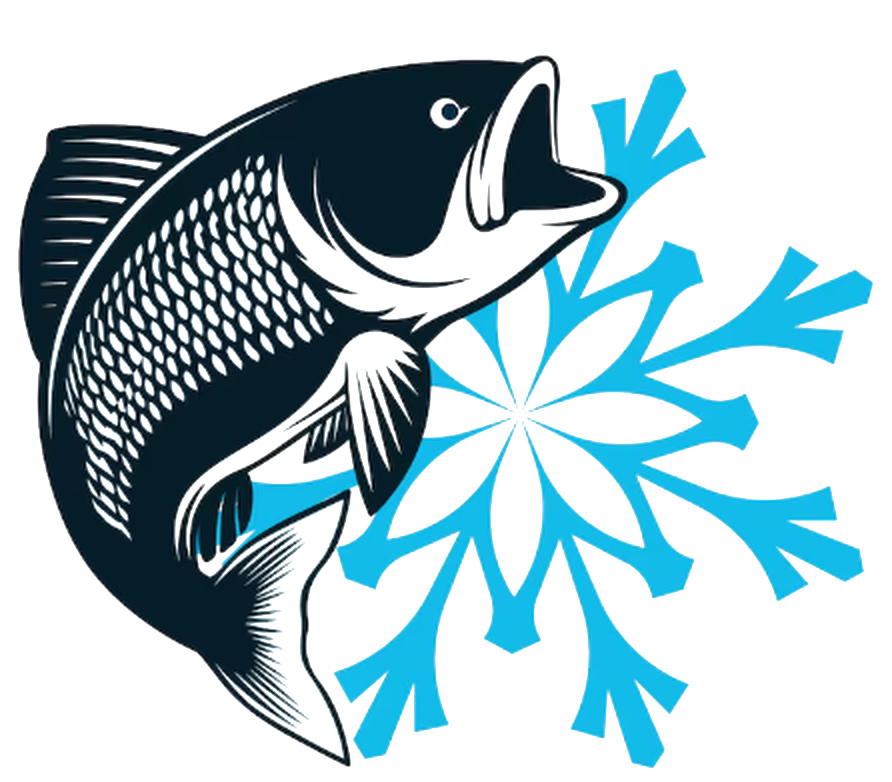
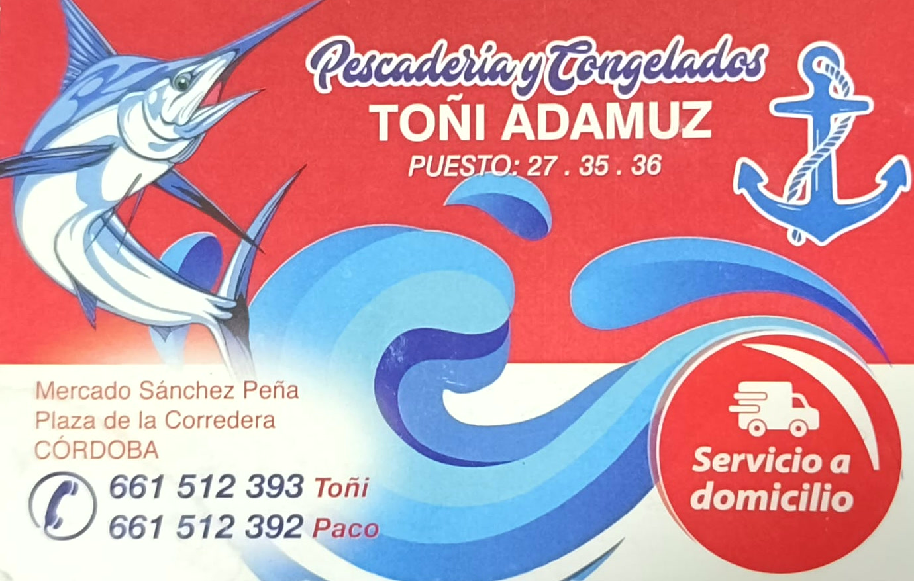

Pescado fresco
- Merluza
- Boquerón
- Sardina
- Dorada
- Lubina
- Rape
- Salmón
Pescado fresco, mariscos y congelados. Pedid por teléfono o WhatsApp y os lo llevamos a casa, o venid al puesto.
| L | M | X | J | V | S | D | |
|---|---|---|---|---|---|---|---|
| Llamadas8:00–12:00 | No | Sí | Sí | Sí | Sí | Sí | No |
| Reparto9:00–13:00 | No | Sí | Sí | Sí | Sí | No | No |
Lo que hay en el puesto y lo que podéis pedir a domicilio.


